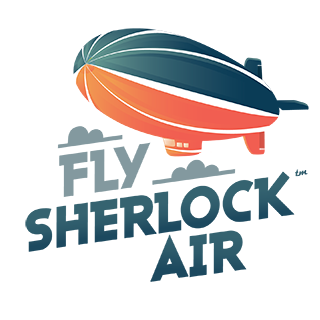

Mechanized Insects
Created by Nicholas Sherlock and DALL·E 2 by OpenAI
Prompts given to the AI had the form "mechanized X, artstation"
AI outpainting was used to extend images
Created by Nicholas Sherlock and DALL·E 2 by OpenAI
Prompts given to the AI had the form "mechanized X, artstation"
AI outpainting was used to extend images